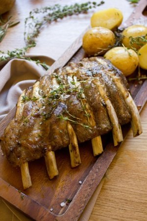

RECETA DEL DIA
FLAN DE CAFE CON BASE DE GALLETAS (SIN HORNO)
HISTORIA
Si siempre quisiste iniciarte en el mundo de la cocina, el tiempo libre que nos deja la cuarentena puede ser un buen momento para arrancar. Y mucho más si se trata de una receta fácil, que puede realizarse en poco tiempo y que no hace falta que uses el horno. Se trata del flan de café, uno de los ingredientes más sabrosos a la hora de convertirse en postre.Se trata de una receta sencilla, y más rápida de preparar que las tradiciones. Además se puede acompañar de frutos secos para contrastar la base de galletas que posee. El resultado es un postre tan cremoso como crujiente.
NOVEDADES

Las costillas 100% ibéricas de Cinco Jotas.
Durante este otoño algunos establecimientos de Cinco Jotas incluyen en su carta una nueva propuesta de chuparse
los dedos: costillas ibéricas tiernas y jugosas procedentes de sus cerdos 100% bellota. Elaboradas al estilo
casero, maceradas y cocinadas a baja temperatura se presentan en tres recetas deliciosas:
-Costillas marinadas con Fino Quinto y tomillo salvaje acompañado de patatas asadas y hierbas de la dehesa
-Costillas marinadas con pimentón de la Vera acompañas de cremoso de patata
-Costillas con salsa barbacoa hechas en casa acompañadas patatas fritas caseras
-Se sirven en raciones muy abundantes al precio de 16,50 euros.